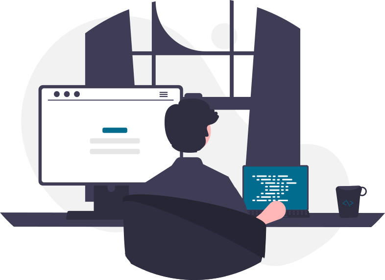

O que você verá por aqui...
Estarei inserindo todos os meus projetos e estudos nesse site, assim compartilhando e registrando toda minha evolução.

WHO AM I?
Olá, eu sou o Sidney, tenho 23 anos de idade. O desenvolvimento é uma arte, um idioma, e até mesmo um jogo! Me sinto desafiado a cada etapa que avanço e a cada div que não centraliza.

Montagem desse site
Para a construção do site, não utilizei linguagem de programação e framework. Além de HTML5 e CSS, utilizei o Pré-processador CSS - o SASS.
Nas atualizações, utilizarei Javascript e React!